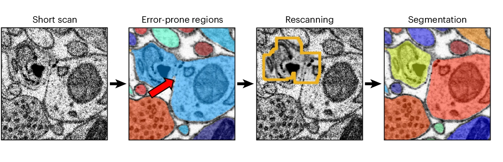

AI-guided electron microscopy accelerates brain mapping

The mission
The primary bottleneck in connectomics - the mapping of neural circuits - is the slow pace of data acquisition by electron microscopes. For decades, the standard electron microscopy approach has been to scan every part of a sample at high resolution for a uniformly long time, an inherently slow and inefficient process. This slow method of data acquisition has limited large-scale projects to a few highly specialized, less accessible multi-beam microscopes. To make large-scale connectomics more widespread, a method is needed to enable more common and affordable single-beam microscopes to acquire data more rapidly.
Unlike the electron microscope, we humans do not scan our visual world pixel by pixel; instead, we perform a quick overview and then use rapid eye movements (saccades) to focus on salient regions. We therefore asked whether we could mimic the efficiency of human vision in this manner to accelerate the acquisition of electron microscopy images.
The solution
Our investigation took the form of developing and implementing a machine learning-guided imaging pipeline, which we call SmartEM, within a commercial single-beam scanning electron microscope (SEM). Instead of scanning every pixel for a uniformly long time, the microscope first performs a very rapid, low-quality scan of the entire sample area. A neural network, ERRNET, then analyzes this initial image in real time to identify small regions that are difficult to interpret ('error-prone') or contain regions of particular scientific interest, such as synapses. The microscope immediately rescans only these targeted subregions at high quality. Finally, to aid human interpretation, an algorithm translates these composite images into a 'stylized' format that mimics traditional, uniform high-quality scans.
Brain tissue is inherently heterogeneous, with many areas that are easily segmented from low-quality images but a few areas that require high-fidelity data. We demonstrate that the SmartEM pipeline dramatically accelerates image acquisition, reducing beam time by about sevenfold across connectomics samples from nematodes, mice and humans, all while maintaining final segmentation accuracy. As an example, imaging a typical adult Caenorhabditis elegans (brain and body) would take ~1,400 hours (2 months) with a standard 800 ns per voxel scan using a single beam, versus ~200 hours (~8 days) with SmartEM.
The implications
The primary implication of our findings is the potential to democratize connectomics. By transforming widely available single-beam SEMs into high-throughput imaging platforms, SmartEM makes large-scale circuit mapping more accessible to the broader neuroscience community. This adaptive, 'intelligent imaging' framework is versatile and could be applied across cell biology to rapidly locate and image sparse organelles such as mitochondria among large tissue areas, or in pathology for large-scale analysis at a manageable budget, or in materials science to inspect for rare defects, focusing imaging time only where it is most needed.
SmartEM dramatically reduces imaging time, meaning that previously negligible forms of overhead, such as the time required for the mechanical stage to move between adjacent fields of view, become the new rate-limiting step. Overcoming this bottleneck will involve parallelizing AI computation across larger initial scan areas to minimize mechanical shifts, a strategy that will be further amplified by the integration of future, larger field-of-view detectors. Furthermore, our current approach is optimized for single-beam SEMs; its strategies for selective rescanning are not directly compatible with the synchronous operation of existing commercial multi-beam microscopes.
Future SmartEM research will aim to create a truly 'thinking microscope' by advancing its AI for 3D awareness in volume electron microscopy and adapting its principles to other microscopy methods. Such adaptations hold the promise of a future in which scientists can see fully segmented results emerge in real time, directly from the sample. Such a leap would make high-resolution imaging more accessible, accelerating scientific discoveries in fields from cell biology to pathology and beyond.